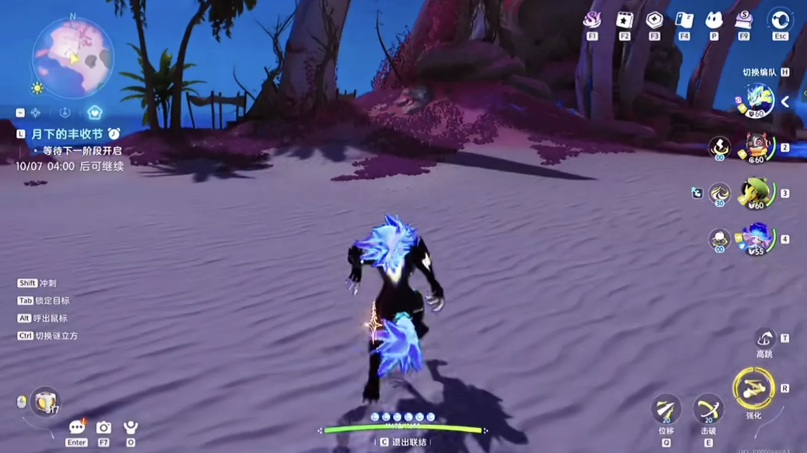

Home首页 / Guides攻略
Reading阅读
Guides攻略
Every written guide the site has, in one place: from the first day to endgame, from map routes to the homeland and catching — each one walking a system through in order, kept apart from the tables you look a name up in.本站最全的图文攻略都在这里：从新手开荒到毕业养成、从跑图路线到家园与捕捉，一套系统怎么运转、碰上它该怎么做，一篇一篇按顺序走完 —— 和那些用来查名字的表分开。
Every guide on this site本站目前的全部攻略
6 written so far.目前共 6 篇。

October 9, 20262026 年 10 月 9 日
The Homeland Production Line: 400,000 a Night Out of a Level 6 Base家园流水线：六级家园一夜进账四十万，就看你怎么派这几只打工伊莫
How the Homeland actually makes money: the two things that decide how fast a worker is, which Aniimo to station and where each one is caught, and why the warehouse ends up in the middle of the fields.家园到底靠什么赚钱：决定打工伊莫快慢的只有两样东西、每只该去哪儿抓，以及仓库为什么最后要放在田中间。

October 9, 20262026 年 10 月 9 日
Prismana, Sparkling, Umbral and the Shiny Star: Aniimo's Four Rare Terms, Explained《伊莫》四个词条：虹光、闪耀、幽黯、闪亮之星都是什么意思
The two appearances and the one rating that decide whether an Aniimo counts as finished: which of them is limited, which is luck, which is nearly free, and the threshold that actually stops people.想让一只伊莫算得上毕业，标准是「双外观加一个闪亮之星」。这四个词条各管一段：哪个限量、哪个靠运气、哪个几乎白送，以及真正卡住大多数人的那道门槛。

October 9, 20262026 年 10 月 9 日
The First Day of Aniimo: Pick a Starter, Fill the Travel Team, and Do Not Sit on the Three-Day Quest新手第一天怎么玩：初始宠二选一，跑图队先配齐，限时任务别拖过三天
What to do with the first day of Aniimo: which starter to take, how catching and the break gauge actually work, which four Aniimo to build first, and why the day is in that order.开服第一天该按什么顺序走：初始宠怎么选、捕捉和击破条怎么用、开荒和跑图各配哪几只，以及这一天里每一步为什么排在那个位置。

October 9, 20262026 年 10 月 9 日
Aniimo's Strongest Electric Team: Three of the Four Are There to Set Up Fulmintis《伊莫》最强电系阵容，四只里三只都在给电刺螳螂铺路
A four-Aniimo Electric party built around one damage dealer: what each of the other three does before Fulmintis comes in, and the order to switch them in.一套四只的电系阵容，全部围绕一个输出位搭：电刺螳螂进场之前，另外三只各自负责什么，以及换人的顺序。

October 9, 20262026 年 10 月 9 日
Aniimo Tier List: The 19 Creatures to Build First《伊莫》强度巅峰榜：几百小时之后，新手先练这 19 只
A personal tier list of 19 Aniimo, grouped by the job each one does — damage, break, healing and support, energy regen — with every element and role checked against the official wiki and the ranking left as my own.一份个人向的强度榜单，按输出、击破、治疗辅助、回能分成四组。每只都逐一对过官方维基的属性与定位，哪一段是能查的、哪一段是我自己的判断，文中分开写。

October 8, 20262026 年 10 月 8 日
Aniimo Review: What Twine Changes About Creature Collectors《伊莫》新游戏测评：联结系统到底改了捉宠游戏的什么
A review of the one system Aniimo is built on — what Twining into a captured creature changes about exploring, fighting, forms and story, and what the game still has to prove.从一个系统看整款游戏：和伊莫联结这件事，到底改变了探索、战斗、形态和剧情里的什么，以及它还有什么没证明。